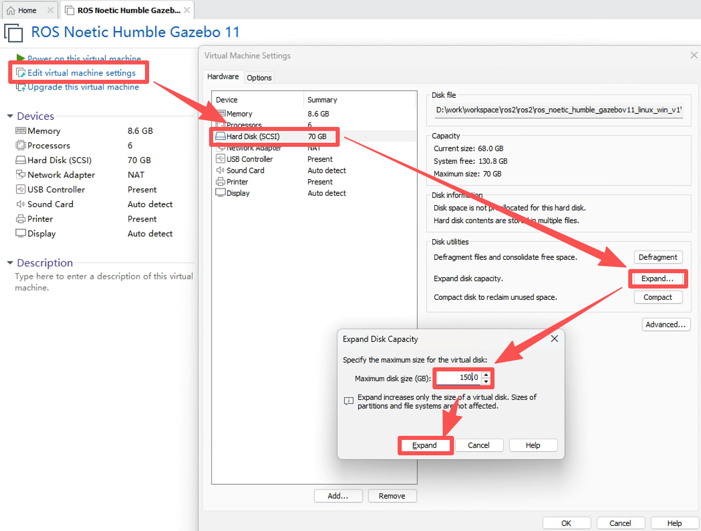
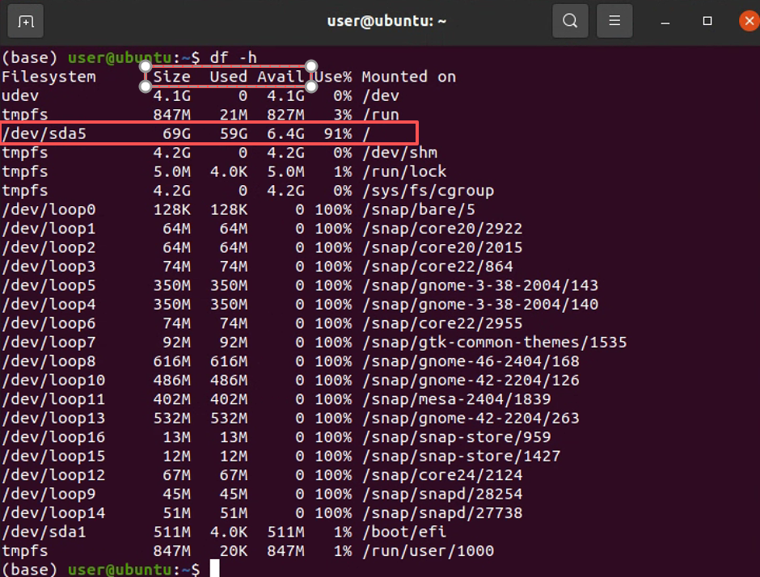
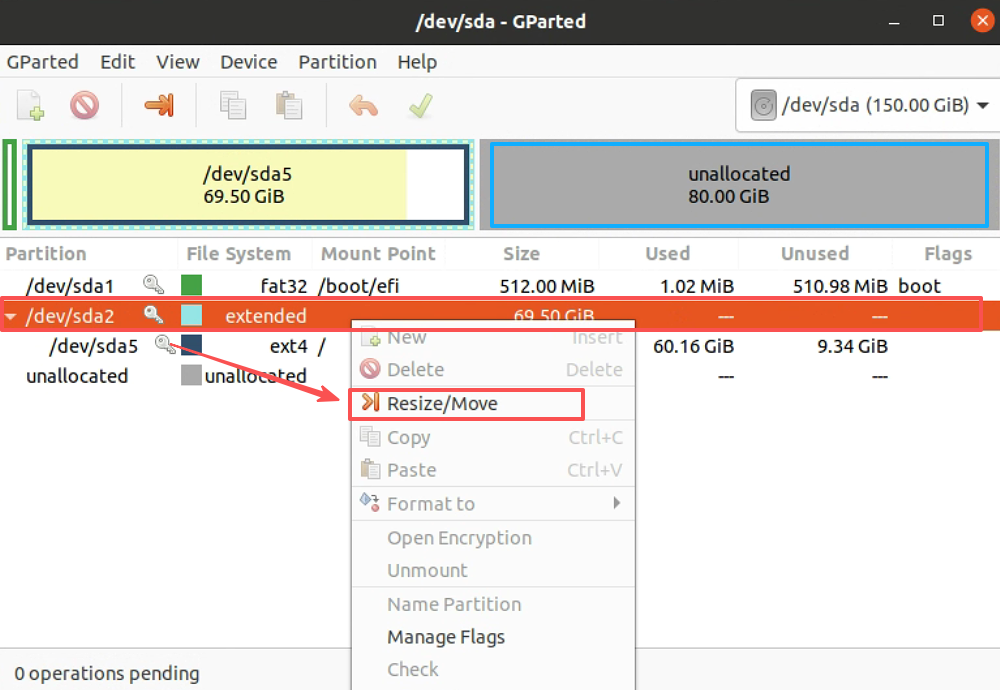
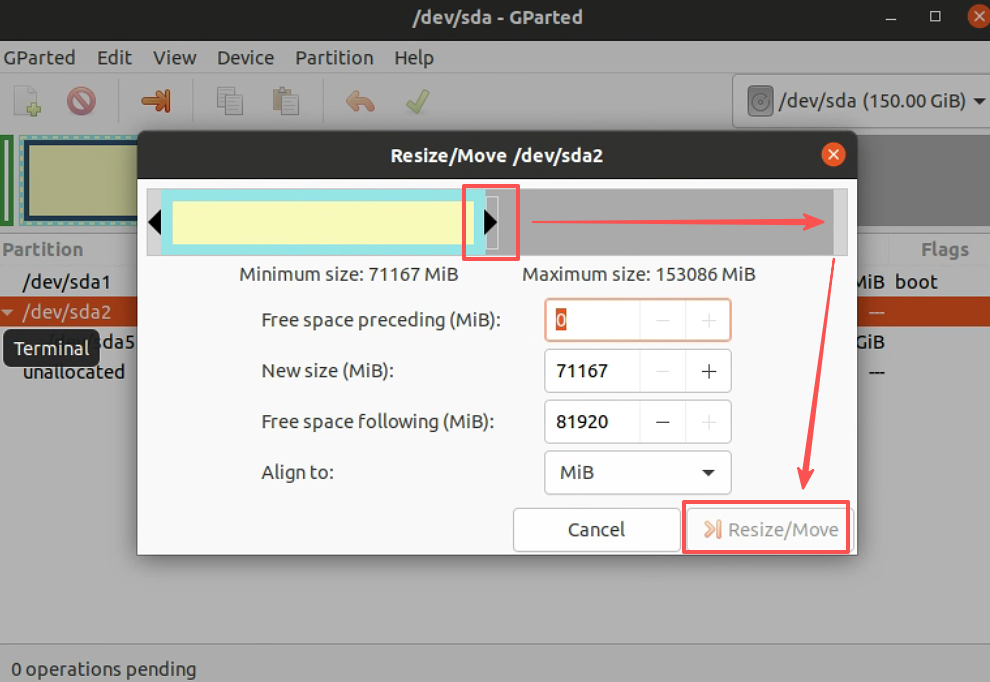
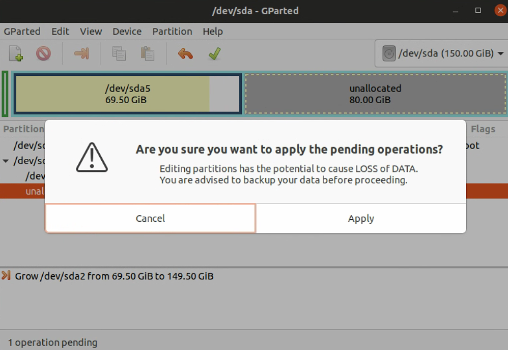
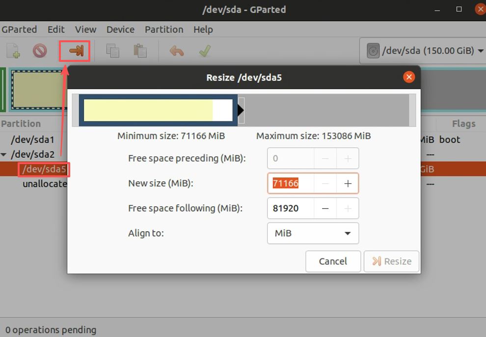
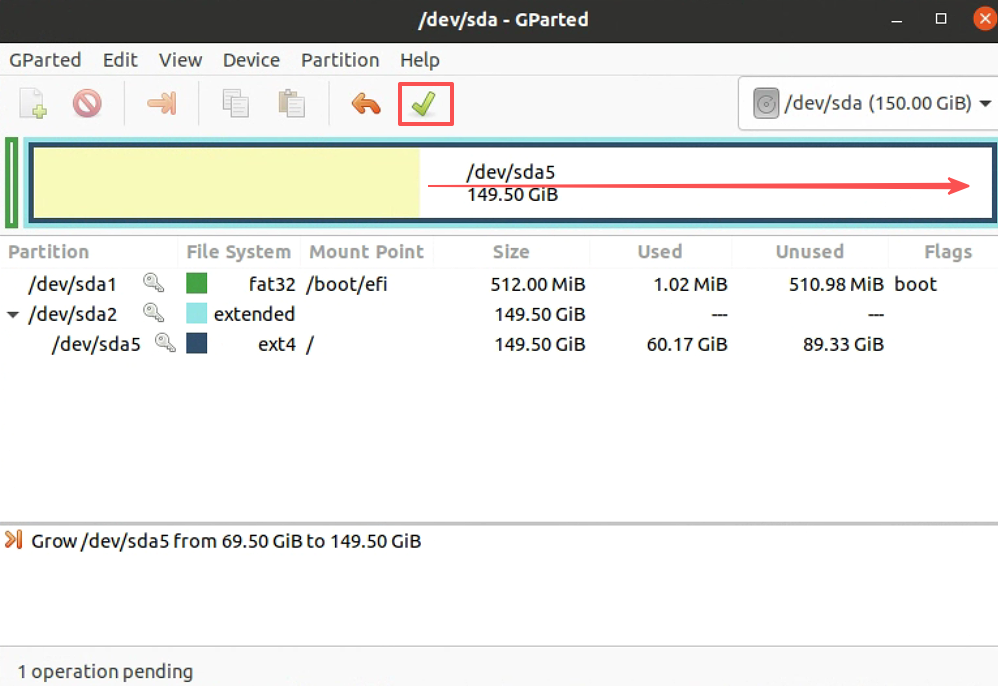
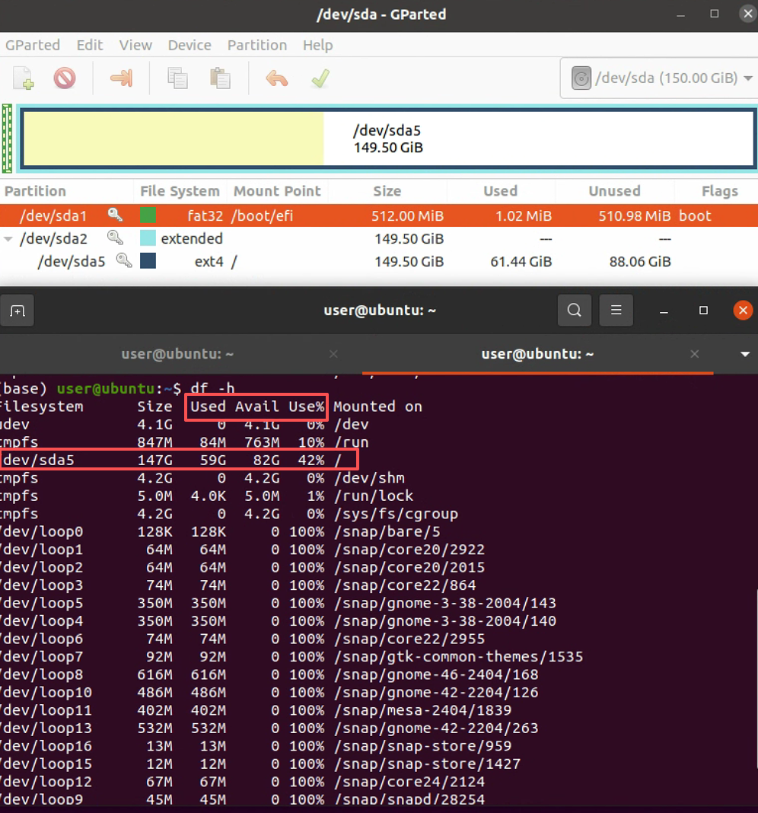

给 Ubuntu 虚拟机硬盘扩容
为了解决在使用 Ubuntu 虚拟机时，预先设置的硬盘容量不够用的问题，本文将详细描述解决方案的操作步骤。
1. 虚拟机设置
如果 Ubuntu 虚拟机处于运行状态，需关机。然后打开“Edit virtual machine settings”，选择“Hard Disk (SCSI)”一栏，然后选择“Expand”选项。接着设置最大磁盘大小（Maximum disk size），这里设置的是扩展到 150GB，如下图所示：

到这一步，扩展虚拟机硬盘容量还没有完成，虚拟机中的系统不会自动扩展新分配的硬盘空闲区。
2. 虚拟机扩容
启动虚拟机中 ubuntu 系统，使用命令df -h查看目前文件系统挂载情况：

命令输出结果可知，根目录总共有 69G，目前已经使用了 59G，还剩下 6.4G。
输入命令gparted并在弹出的窗口输入用户密码。GParted 将找到目前未分配的内存容量为 80GB。
然后用鼠标点击已经存在的分区（注：想要扩展的分区，这里是/dev/sda2，不是 /dev/sd5）后，右键选择“Resize/Move”，如下图所示：

接着用鼠标拖动移动箭头来增加硬盘容量大小，在移动完成后，点击“调整大小（Resize/Move）”，如下图所示：

然后点击下图所示的绿色勾，接着会弹出一个警告框，我们点击“应用（Apply）”即可：

最后选择/dev/sda5做同样的操作（最后注意点击绿色勾应用修改），如图所示：


接着 GParted 会自动进行分区大小的调整。扩容完成后，使用df -h查看：

从上图可知 /dev/sda5 的总大小变为 147G。至此，扩容 Ubuntu 虚拟机硬盘容量就已全部完成。